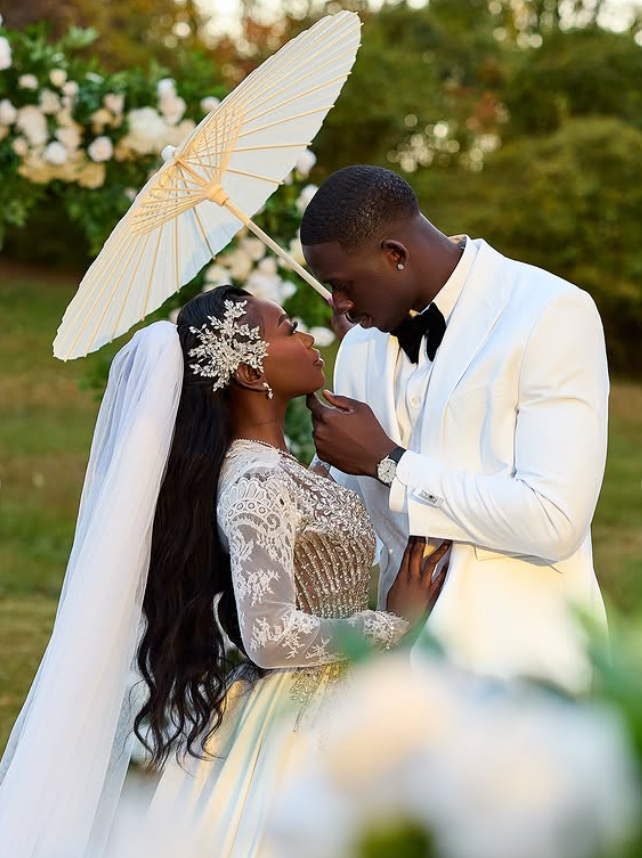
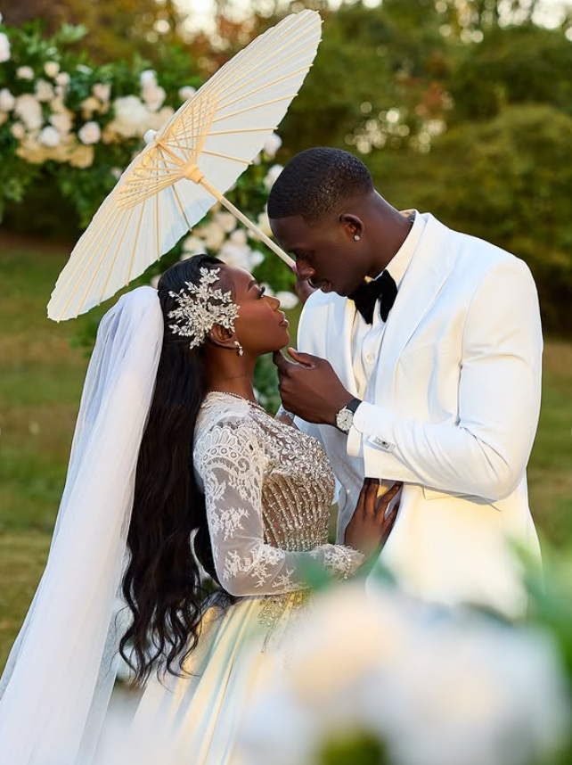

Capturing Special Moments
Professional photography and videography services that bring your vision to life.
View Portfolio
Professional photography and videography services that bring your vision to life.
View Portfolio
At ShotByMuyiwa, we believe every frame tells a story. Whether it’s a wedding, a brand project, or a personal creative shoot, our mission is to craft visuals that speak emotion, movement, and beauty.
Based in Maryland, we specialize in cinematic photography and videography that captures authentic moments and turns them into timeless art. Every project is built on passion, creativity, and attention to detail.
Book a Session

 
